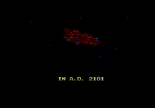
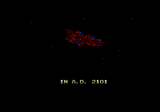

Frequently Asked Questions
- What is AllyourX ?
- How does it relate to existing standards and software ?
- What are the benefits of conforming?
- What software supports the standard ?
- Why are the technologies provided for free ?
- What is the license ?
- Why is the project called AllyourX ?
What is AllyourX ?
AllyourX is a minimal standard defining the rich data which an application requests from its users.
GPL software is provided which uses this information to automatically generate a functional front end for your users, as well as defining the back-end interaction with your choice of hosting platform.
The standard is agnostic to specific hosting technologies used, allowing prototyping to proceed without committing to database or server technologies.
How does it relate to existing standards and software ?
The AllyourX toolset is merely a smart combination of selected standards and software. It extends them minimally, and only to the extent which is absolutely necessary to close the gap between schema languages and fully working applications.
What are the benefits of conforming?
You should be able to prototype applications without writing much, if any, application code. A GPL software implementation is available which generates forms for your users in XHTML (webpages in the browser) and outputs data to store in the form of XML.
Once you additionally define queries and views on your data, (we choose XPath and XQuery for this), this fully defines most web applications. You can rapidly prototype your app using the canonical XHTML+javascript+XML implementations provided, and later specialise your choice of look and feel, implementation language, data storage and query engine according to your tastes and needs, rather than being locked into one implementation approach for the lifetime of your app. This contrasts with typical apps which tangle the definition of form validation, front-end and back-end together with host-specific and language-specific implementation details.
A canonical example of a single-user application is provided, which runs as a Firefox plugin, stores your rich data on your local disk and uses XQuery to query and construct views (pages) on the fly. This application can be re-purposed to the creation of almost any single-user website by simply copy-pasting your design in place. However, the same techniques can be applied to multi-user web applications. If you're inspired by the single user prototype, we are here to help.. Storage and querying are separate modules from the data authoring framework, so we hope to see a community of people specialising these techniques for their favourite hosting flavour too.
What software supports the standard ?
A single-user canonical implementation already exists suitable to generate websites hosted on your local machine. The user interface is browser-based, using an XHTML+JQuery (front end), local XML file storage (back end) and POW+XQuery hosting (server and query engine). It is available here.
Multi-user applications can take advantage of a variety of hosting and querying platforms with more to follow.
Why are the technologies provided for free ?
We believe that maximising benefit to users is simply a good way of doing business. With this single-minded focus we hope to reach millions of users by removing blatantly obvious obstacles to application prototyping which currently make users unhappy.
Doing it for free helps us to focus on customer enablement, rather than customer prevention. The mainstream industry is in the business of prevention, through licensing and lock-in. It overlooks these trivial early-lifecycle prototyping problems in the interests of selling monolithic and expensive solutions where they are unnecessary.
Allyourx.co.uk want to be a trusted partner, recommending solutions to you which meet your actual needs, and this is our proof.
What is the license ?
The augmented schema standards from allyourx.org are in the public domain, making them available for use by any person for any purpose.
The authoring software from allyourx.co.uk built against these standards is distributed under the Gnu Public License (GPL) to maximise the freedom of any derived software, (the GPL includes a copyleft clause ensuring software distributed with allyourx.co.uk code is itself available under the GPL).
If you wish to relicense our software under different terms, then please make an enquiry. We are reasonable people.
Why is the project called AllyourX ?
 

It's a combination of "All your eggs in one basket", and "All your base are belong to us", two important proverbs from the English language.
You can avoid putting all your eggs in one basket by adopting a standard which can bridge a host of front-end and back-end technologies, making migration to a new hosting technology simple as your needs change.
We also hope that, in the end, people will come around to our way of thinking. And then, all your base are belong to us, HA HA HA HA....
The X is a pun, because the toolkit uses XML technologies.